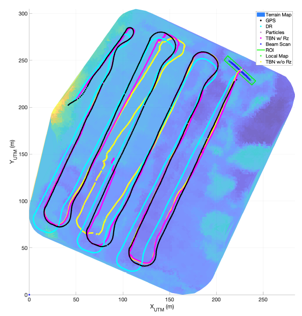
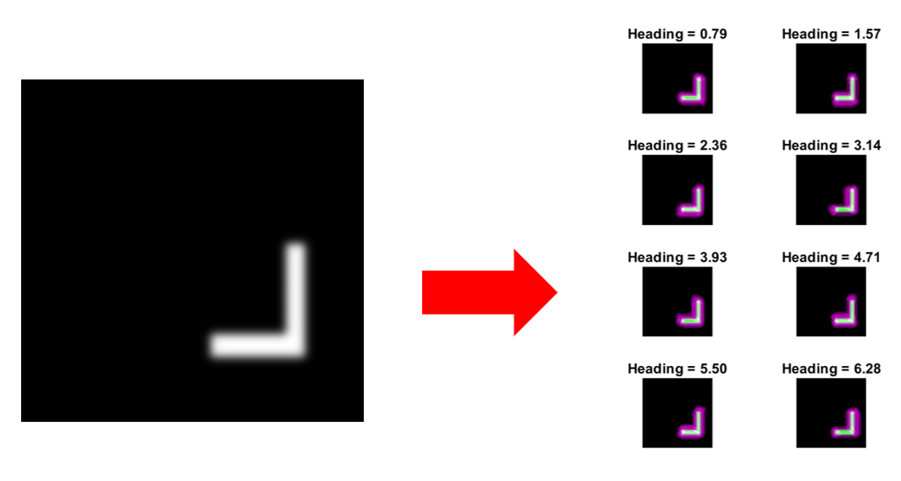
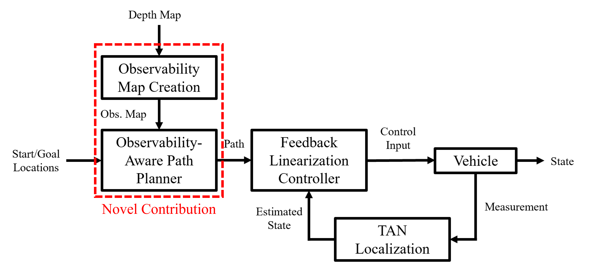
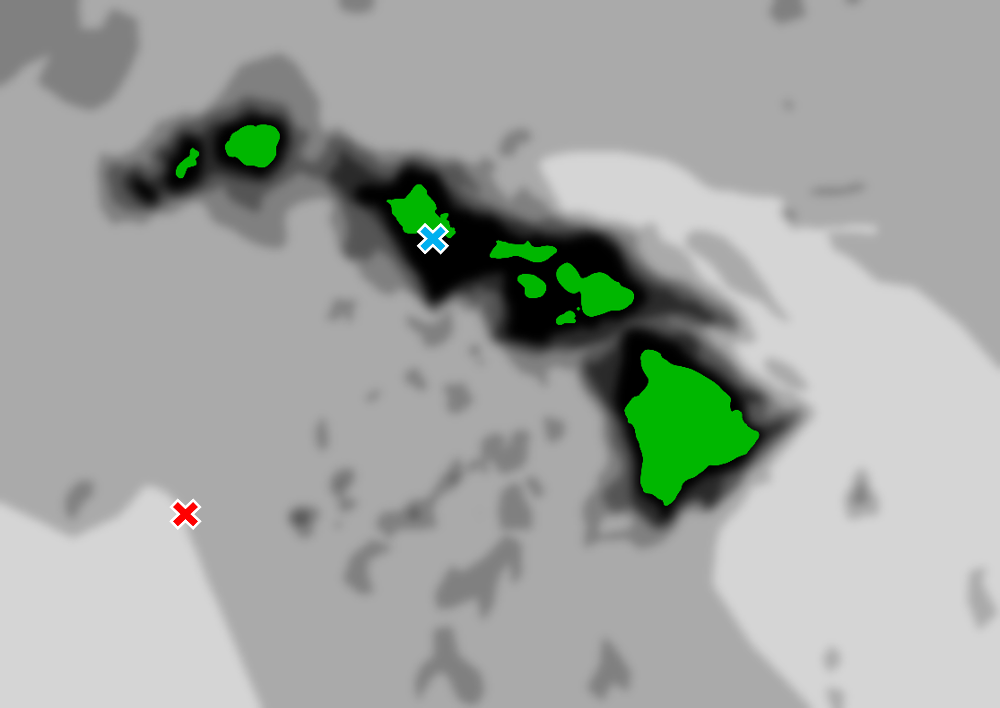

Observability-Aware Path Planning for Autonomous Navigation
(August 2023 - August 2024)
Master of Science Thesis
Abstract
Terrain-Aided Navigation (TAN) is a popular method of localization for GPS-denied vehicles. There are many ways to perform TAN, such as Bathymetric SLAM (BSLAM) and Bayesian Filtering with the aid of an a priori map. These techniques have been studied extensively, but show an overall lack of rigorous observability analyses. Without nonlinear observability analyses, TAN practitioners do not have an analytical method to indicate which areas of terrain will provide the best opportunity to maximize localization performance. This paper presents a novel method for transforming a terrain map into a map that shows areas with the best potential for localization and uses it to plan mission paths that minimize localization error. The path planner is then tested with a series of MATLAB simulations, featuring custom-generated maps as well as a terrain map of Hawaii that tests the technique’s viability on naturally-occurring terrain, with favorable results.
Introduction
A popular problem with Autonomous Underwater Vehicles (AUVs) is that GPS is often unusable for localization because of how tough it is to pass a radio signal through seawater. A popular solution is to use seafloor data, often collected with an onboard SONAR, which is fused with Inertial Measurement Unit (IMU) data to provide a localization estimate. This is called Terrain-Aided Navigation (TAN).
One thing you'll see when you perform TAN is that depending on the shape of the seafloor, the quality of the estimate can vary: if the seafloor is varied and has many peaks and valleys, that gets good localization. If it's the opposite and the seafloor is flat, localization is poor.

You can see how seafloor "roughness" can affect vehicle localization by looking at the pictures above from a publication by Jung et. al. (cite here), where less color variation corresponds to less seafloor height variation. The vehicle takes a lawnmower pattern. On the graph, more deviation between lines corresponds to poorer localization. The problem I solved with my thesis project is this: How can we select a path for a TAN-enabled vehicle that maximizes its localization accuracy during a mission?
Methodology
The solution that I proposed came down to two major components: (1) a new way to process a terrain map that would yield a new map that shows where the good areas to localize are, and (2) a path planning strategy that would take this new map as an argument to generate a path that takes advantage of these good zones.
Task 1: Process a terrain map into a new map that shows good localization zones
To do this, it's good to refresh yourself on the concept of observability in control systems. In a canonical linear system,
$$ \begin{align} \dot{\mathbf{x}} &= A\mathbf{x} + B\mathbf{u} \\ y &= C\mathbf{x} + D\mathbf{u} \end{align} $$
You can manipulate the terms \(A\) and \(C\) to tell whether or not you can deduce the entire state from just the measurements you're taking:
$$ \mathcal{O} = \begin{bmatrix} C \\ CA \\ \vdots \\ CA^{n-1} \end{bmatrix} $$
Where \(\mathcal{O}\) is the Observability Matrix and \(n\) is the total number of individual states. If \(\mathcal{O}\) is full rank, the system is said to be observable. In nonlinear systems, where the model takes a more general form:
$$ \begin{align} \dot{\mathbf{x}} &= g(\mathbf{x},\mathbf{u}) \\ z &= h(\mathbf{x},\mathbf{u}) \end{align} $$
Simply concatenating multiplied matrices is not possible. To handle nonlinearities, other researchers have used Differential Algebra, Power Series and Numerical methods to find observability matrices, but for this project, I used Differential Geometry in the form of a series of Lie Derivatives. The result is a matrix that looks very similar to \(\mathcal{O}\), but describes observability behavior between states.
This process, called a nonlinear observability analysis, is the process by which I turned a topographic terrain map into an "observability map" that shows where the vehicle is able to localize itself the most effectively. In the figure below, you can see how an observability analysis of this system transforms a sample terrain map into a set of observability maps based on the heading of the vehicle:

Task 2: Use the map to plan a path that maximizes localization accuracy.
After the map was created, the next step was to implement a path planning algorithm to take individual location values of the observability map as an argument in the cost function. I chose Dijkstra's algorithm as a basis for this planner because it was simple and guaranteed an optimally-short path. The result was a path planner that explored the features that reached the most observable features first, with respect to how far they were from the starting location.
Results
The simulator I built included the observability analysis, the path planner, as well as the kinematics/measurement/Particle Filter simulator. I've included a block diagram of what I made, along with an outline of my research's novel contribution below:

I designed two experiments to validate the observability analysis and novel path planner; I've included one of them here. For this leg of the project, I turned a topographic map of the Hawaiian seafloor into a grayscale map and passed it into my simulator. After I included land area where the planner was not allowed to go, it planned a path from the starting waypoint to the ending waypoint:
This particular plan begins around Honolulu and travels to a destination in the middle of the sea. You can watch the plan converge in real time below:
After that, I tested this observability-aware path plan against a straight, "Naive" plan. Throughout the mission, the observability-aware plan maintains a high degree of accuracy compared to the naive plan. The promise of my planner strengthens more when you consider how well each planner is able to reach the destination more accurately. The observability-aware plan is clearly more accurate than the naive one:
Conclusions
There are many potential applications for this type of path planner, and can serve as a general foundation for more specific studies in the area of GPS-denied, Terrain-Aided Navigation. This project makes the assumption that the vehicle being used is an AUV, but the theory that supports observability map creation can be extended to any kind of scalar field. As a result, I believe this theory can find a home in other fields such as Space/Celestial Navigation or Surgical Robotics.

References
Ma, T., Ding, S., Li, Y., and Fan, J., "A review of terrain aided navigation for underwater vehicles," vol. 281, p. 114779. [Online]. Available: https://www.sciencedirect.com/science/article/pii/S0029801823011630
Thrun, S., Burgard, W., and Fox, D., Probabilistic Robotics (Intelligent Robotics and Autonomous Agents). The MIT Press, 2005.
Jung, J., Park, J., Choi, J., and Choi, H.-T., "Terrain based navigation for an autonomous surface vehicle with a multibeam sonar," in OCEANS 2019 - Marseille, 2019, pp. 1-4
Hermann, R., and Krener, A., "Nonlinear controllability and observability," IEEE Transactions on Automatic Control, vol. 22, no. 5, pp. 728-740, 1977.
"Bathymetric map of hawaii," https://geoportal.hawaii.gov/datasets/HiStateGIS::ocean-depth/explore?loaction=20.755819%2C-156.829813%2C7.45, accessed: 2024-05-13.
Villaverde, A. F., "Observability and structural identifiability of nonlinear biological systems," Complexity, vol. 2019 no. 8497093, p. 12, 2019 [Online]. Available: https://doi.org/10.1155/2019/8497093
Bhattacharyya, D. and Pati, K. C., "Nonlinear controllability and observability analysis of dc-dc boost converter using lie algebra," in 2019 International Conference on Computing, Power and Communication Technologies (GUCON), 2019, pp. 75-81.